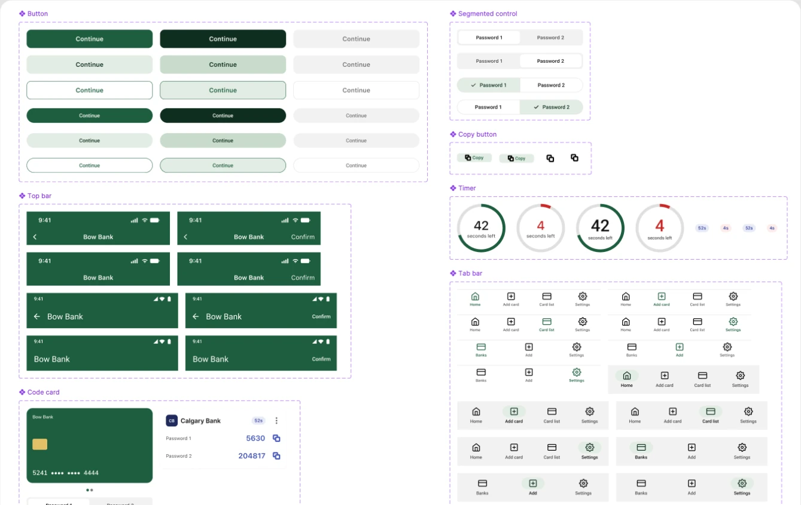
My part: I proposed this design system and built it, from the first audit to handoff.
Note: I rebuilt these screens to share them here. The flows and decisions are real.
I started as the only designer on a team of four. The app had three screens. Then one app became two, every screen had its own colors, and changes got lost. So I built one design system for both apps.
4–5 → 0
color bugs per release
38 → 13
components, after merging
2
apps on one system
13 → 287
variables, in three layers
The product was a one-time password app for banks, on iOS and Android. It was B2B2C: the banks bought it, and their customers used it. Every decision had to clear the bank’s security team and still work for someone standing at an ATM. I proposed the design system and built it. Later a second designer joined and worked with the same system.
Three screens, no design system. Everyone set their own colors, on every screen.
The biggest bank wanted the app just for itself, so the other banks moved into a second app. Front-end and mobile work went from 2 developers to 5. With more hands on more screens, the inconsistencies grew.
The same color had different names: primary_, primaryFirst, or just a hex code. Developers set colors by hand. QA found 4–5 color bugs in every release.
I showed how one system would cut the gaps between the teams. I got one week to prove it. I built the color system first. The team accepted it, and the rest followed.
I rebuilt the system in Figma. Bow Bank is the single-bank app, in green. Elbow Trust holds many banks, in indigo. Every step, token and component below comes from that file.
I put every screen from both apps side by side, on iOS and Android. Then I cut out every piece: buttons, inputs, cards, text, colors, icons. I sorted them by type and counted how many versions of each one existed.
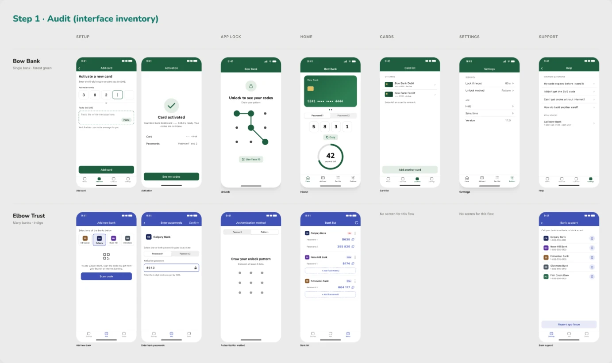
I checked in two directions. Inside one app: does the app match itself? Between the two apps: is this the same part in a different color?
| What I saw | What it becomes | Example |
|---|---|---|
| Same job and structure, in both apps | One component. Build it first. | Button, Top bar, Tab bar |
| Same job and structure, different color | One component. The color comes from the theme. | Copy button |
| Same job, different emphasis | Variants of one component | Button: Primary, Secondary, Tertiary |
| Looks alike, different job | Separate components | Bank badge and Copy chip |
Where a part is used is a second question, and I answered it after the first one. It decides where a component lives, never whether it is one.
| Where it is used | Where it lives | Example |
|---|---|---|
| Both apps | The shared library | Button, Input, Code card |
| One app only | The same library. Only that app’s screens use it. | Bank badge, in Elbow Trust |
| Once, and nowhere else | It stays on the screen | The success icon |
I collected every color from both apps and checked what each one did on screen. Then I merged the near-duplicates. A primitive has a name and a value, but no job yet. Screens never use them directly.
9E9E9E into 757575, because 757575 passes text contrast at 4.6:1 and 9E9E9E fails at 2.7:1.Both grays on white. 9E9E9E sits in the red zone, under the 4.5 line that normal text has to clear. 757575 clears it, with little room to spare. That is why the merge went one way and not the other.
The same code and countdown, at the size they appear on the phone. With tabular digits every number is the same width, so the dashed edge holds still. With proportional digits a 1 is narrower than an 8, so the row twitches on every tick — while someone is copying it.
Every primitive gets a job. Components only use these names, never a primitive.
The first version followed Material’s role names, like primary and on-surface. That gave the team one language, and iOS used the same names as Android. But the audit showed two problems. The hex codes were typed straight into those names, with no primitives under them. And two names did the same job: background and surface were both white.
So I put the primitives underneath and grouped the names by job: text, surface, border, brand, feedback. background and surface became one name, surface/default, and the light grey behind controls kept a name of its own, surface/subtle. Two names doing one job became one name with one job.
| Token | Points to | Job |
|---|---|---|
text/ | neutral/900 | Main text |
text/ | neutral/700 | Labels people need to read |
text/ | neutral/600 | Hints and captions, on white only |
surface/ | neutral/0 | Page and card background |
surface/ | neutral/100 | Fills behind controls |
border/ | neutral/200 | Dividers and card edges |
border/ | neutral/600 | Input edges, so they pass 3:1 |
brand/ | green/700 · indigo/500 | Main buttons, top bar, active tab |
feedback/ | red/800 | The last 5 seconds of a code |
feedback/ | red/800 | A wrong activation code, a failed sign-in, passwords that don’t match |
10 of the 74 semantic tokens per bank.
Color is not the only layer with jobs. Type sizes change per platform, so each one carries both values.
| Token | iOS | Android | Job |
|---|---|---|---|
type/ | size/17 | size/16 | Body text |
type/ | size/17 | size/14 | Button labels |
type/ | size/13 | size/14 | Segmented control |
feedback/warning and feedback/error both sit on red/800 today. The last 5 seconds of a code is a warning, so when warnings change color later, errors stay where they are.Most parts use semantic tokens directly. Three get their own: Button, Code card and Timer. The test is not whether a part changes per bank or per platform — nearly all of them do, and a semantic token already carries that. A part earns its own tokens when the token it points to changes. The Code card’s digit points to text/ in Bow Bank and brand/ in Elbow Trust. One semantic name cannot hold two different pointers, so the Code card gets its own.
The other eleven parts never do this. The Segmented control’s label is 13 on iOS and 14 on Android, but it always points at type/. Same pointer, different value — so it needs nothing of its own. A button never asks for a color. It asks for a job.
button/primary/bg brand/primary green/700 in Bow Bank · indigo/500 in Elbow Trustbutton/height ios/control-height height/50 Not every token is a color. On Android the same button/height points at android/control-height and lands on 40, where Material puts it.
The names follow one pattern: part, then property, then state. button/ is the button, its primary background, when pressed. If you can guess a token’s name before you search for it, the system teaches itself.
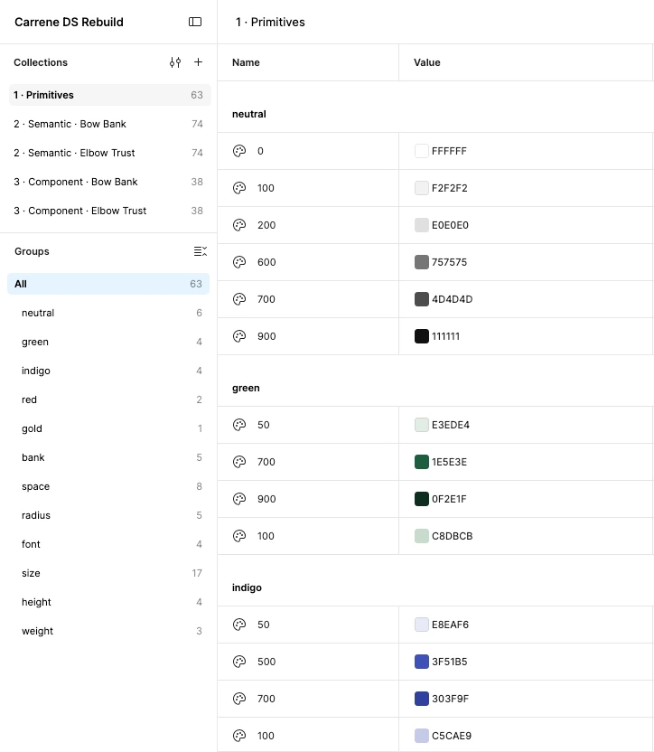
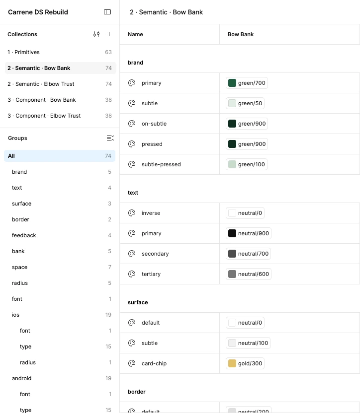
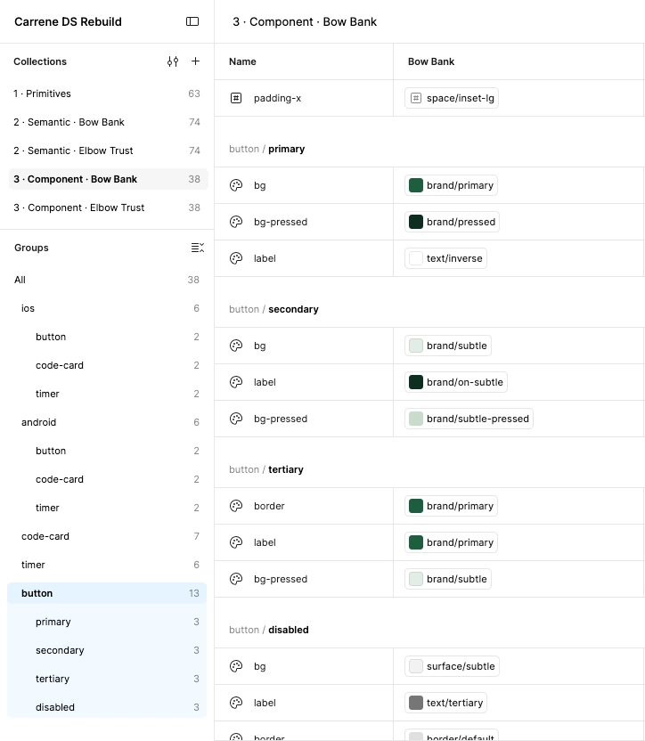
The three layers as they are in the Figma file. No component token points to a primitive.
In total, 13 variables became 287, in five collections: one Primitives shared by both banks, then Semantic and Component for each bank. 63 + (74 × 2) + (38 × 2) = 287.
I listed every component on both app pages and matched each one to a part from the audit. Platform and bank differences became variants or tokens, not new components.
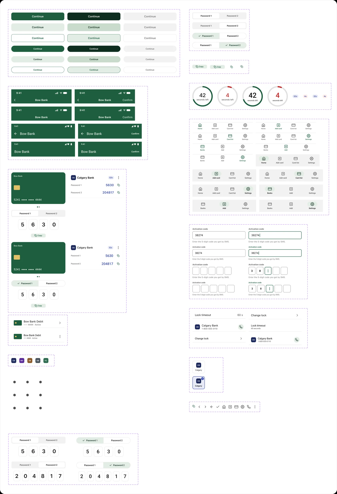
| Component | Variants |
|---|---|
| Button | Primary, Secondary, Tertiary × iOS, Android × Default, Pressed, Disabled |
| Copy button | Chip, Icon × platform |
| Top bar | Platform × back × action |
| Tab bar | Platform × 3 or 4 tabs × active tab |
| Code card | Large (Bow Bank), Compact (Elbow Trust) × platform |
| Timer | Ring, Chip × Default, Last 5 s × platform |
| Segmented control | Selected side × platform |
| Code switcher | Password 1, 2 × platform |
| Input | Code boxes, Text field × platform × Default, Focused |
| List row | Value, Chevron, Call × platform |
| Bank tile | Default, Selected |
| Card row | One job |
| Bank badge | One job |
| Pattern grid | One job |
check icon from the Material 3 Design Kit, 18×18, inside the Segmented control’s two Android variants. The Code card and the Code switcher nest that control, so they had inherited it too — one borrowed icon in 11 places. I swapped both Android variants to this file’s own icon/check : an 18 instance with the stroke set to 1.5 and the color on brand/on-subtle . All 11 uses resolve to it now. The iOS variants have no check, so they were not touched. Then I removed the Simple Design System library. iOS and iPadOS 27 and Material 3 stay attached as reference, and no component in the file depends on an outside kit.screen-margin 20 leaves on a 390 screen, and let the box width follow the longest code: 56 for four digits, 44 for six, gap fixed at 12 in both. The gap is the token. The box is whatever makes the longest code fit the card, so a seventh digit would not break it.A bank is a theme: a short list of token values. The Code card is the clearest case. It carries a border token and a shadow token, and each bank sets one of them to none — Bow Bank the shadow, Elbow Trust the border. Same component, same properties, different values. Switch the bank below. The components don’t change. Only the values do.
Showing the Bow Bank theme.
| What changes | Value now | Used for |
|---|---|---|
brand/ | Primary button, input focus, icons | |
brand/ | Primary button, pressed | |
brand/ | Secondary button, timer chip, call button | |
brand/ | Text and icons on the light brand fill | |
font/ | Bank names and headings | |
code-card/ | The code itself | |
| Code card edge | How the card sits on the page |
font/ is the only value in that list that is not a color, and the one with the most risk in it: Nunito and Inter are different typefaces with different metrics. It is safe here because brand type runs on bank names and headings only — short strings in containers that can give. The code itself stays on font/ in both banks, so the digits someone reads against a countdown never change shape.
Text, surface, border and feedback colors stay the same. So do spacing, radius, tap areas and all 14 components. The token names are identical in both banks. That is what makes the swap safe.
These are the screens from the Figma file, built from the 14 components.
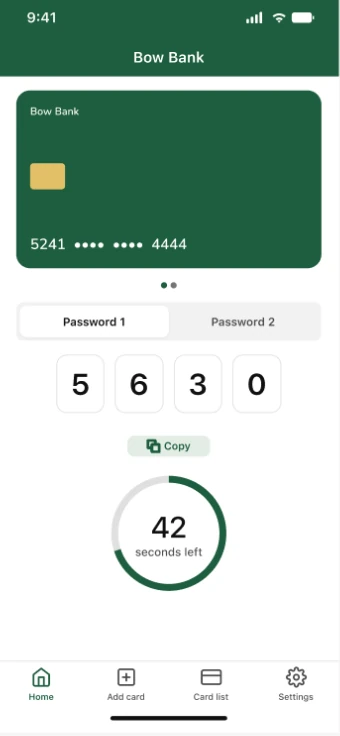
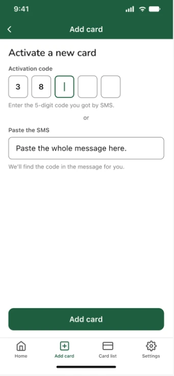
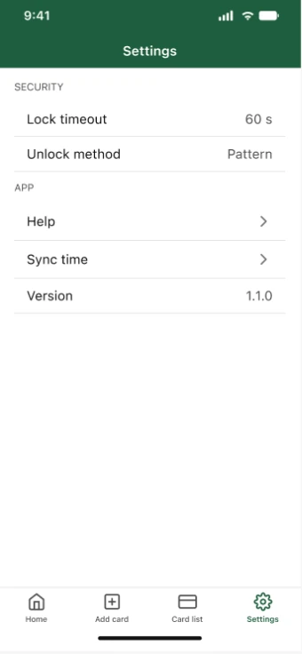
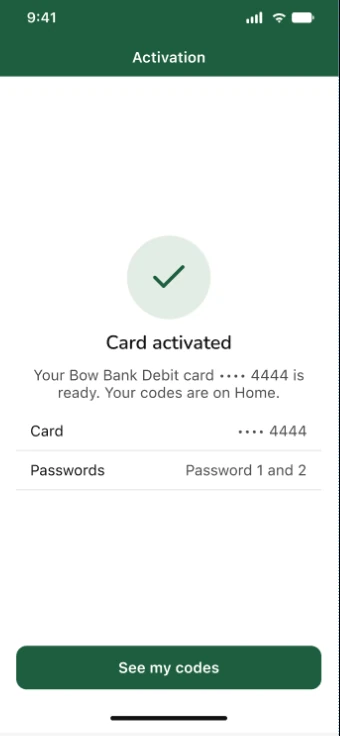
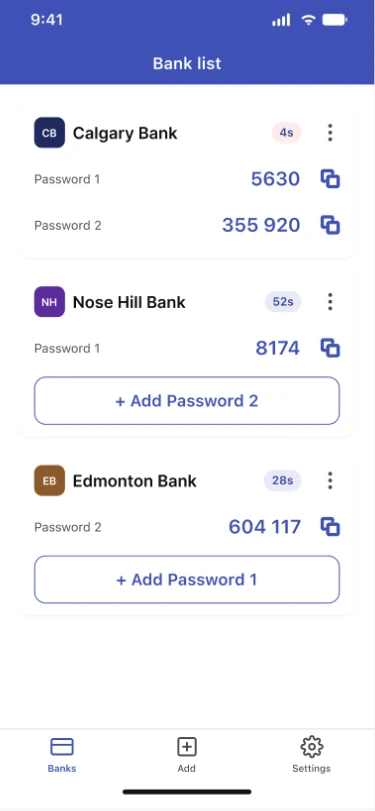
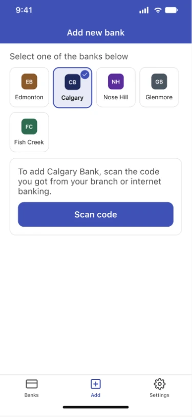
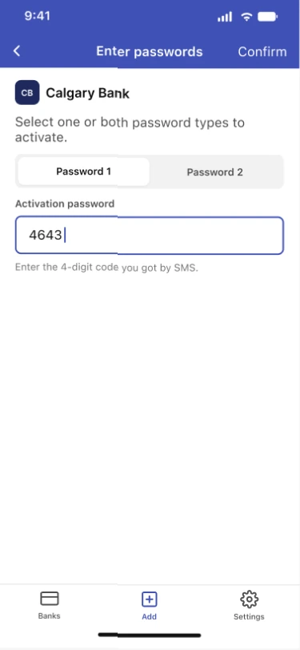
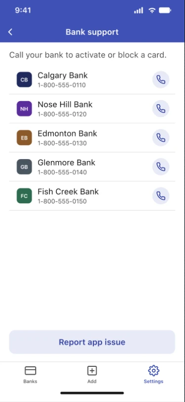
Top: Bow Bank. Bottom: Elbow Trust. Same components, same tokens, two themes.
Engineers get three things: the token name in their own language, the platform differences, and the tap areas.
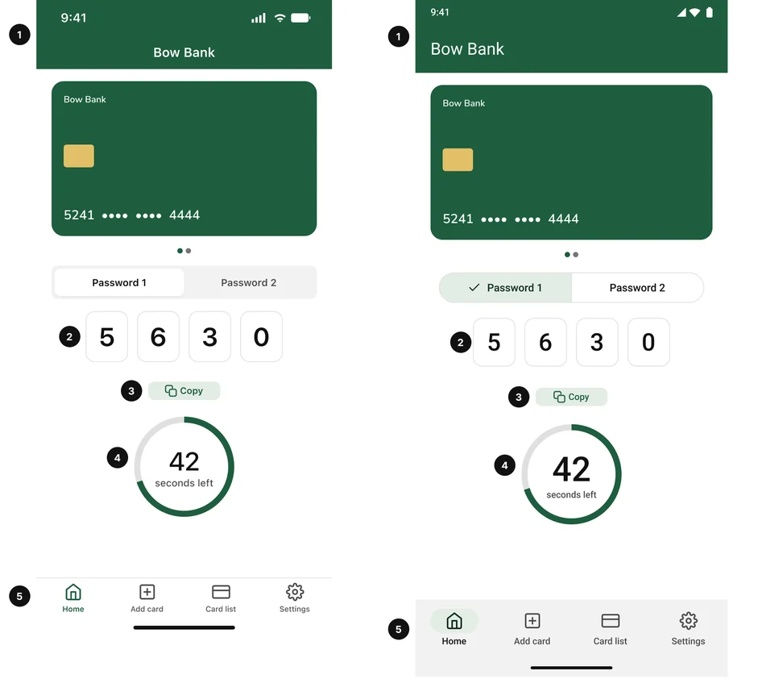
| # | Part | Note for engineers |
|---|---|---|
| 1 | Top bar | iOS: 44 bar, centered title at 17. Android: 64 bar, left title at 22. |
| 2 | Code digits | System font, tabular digits. iOS 34, Android 32. The boxes hug the digit, so they grow with larger text settings. |
| 3 | Copy button | The chip is 24 tall, inside the standard tap area. |
| 4 | Timer | Counts down from 60. In the last 5 seconds it turns to feedback/ and the ring pulses. |
| 5 | Tab bar | iOS: the active label is bold. Android: the active tab gets the indicator pill. |
| Figma variable | iOS | Android |
|---|---|---|
brand/ | brandPrimary | brand_ |
button/ | buttonPrimaryBg | button_ |
type/ | typeBody (17) | type_ (16) |
touch-target | touchTarget (44) | touch_ (48) |
Every variable carries its code name, so engineers see the name they type, not a hex code.
Each component has a spec: its variants, its sizes, and which token goes on which property. Engineers build from the spec, not from a screenshot. This is the Button.
| Property | Token | iOS | Android |
|---|---|---|---|
| Fill | button/ | brand/primary | |
| Fill, pressed | button/ | brand/pressed | |
| Fill, disabled | button/ | surface/subtle | |
| Label color | button/ | text/inverse | |
| Height | button/ | 50 | 40 |
| Corner radius | button/ | 12 | Full (pill) |
| Side padding | button/ | 16 | 16 |
| Label size and weight | type/ | 17, semibold | 14, medium |
| Tap area | touch-target | 44, covered by the 50 height | 48, around the 40 button |
The tokens leave Figma as one file. The iOS and Android values are generated from it, so nobody retypes a hex code. When a token changes, the change reaches both apps the same way.
"brand": {
"primary": { "value": "{green.700}" }
},
"button": {
"primary": {
"bg": { "value": "{brand.primary}" }
}
}static let green700 = Color(hex: 0x1E5E3E)
static let brandPrimary = green700
static let buttonPrimaryBg = brandPrimary<color name="green_700">#1E5E3E</color>
<color name="brand_primary">@color/green_700</color>
<color name="button_primary_bg">@color/brand_primary</color>Three layers, one direction: component, semantic, primitive. Name by job, not by look. A new value rounds to the nearest step on the scale first. A token is added to both banks or to neither.
The team lead approved a new component or token before it went in. Each sprint had a planning and tasking day. On that day, a handoff meeting walked the developers through what was new and why.
Before a new component goes in, I ask one question first: can an existing component do this job with a new variant?
Every rule here lives inside a token or a component, so a screen gets it without anyone remembering to add it.
Every text and edge color was checked against the surface it sits on before it became a token. A gray that failed was merged into one that passed.
The Copy chip is 24 tall and the Android button is 40. Each one carries an invisible tap area around it, so the size that matters lives in the component and not in a reviewer’s checklist.
The selected bank gets a check mark. The active tab gets a bold label or a pill. On Android the selected segment gets a check, because the tint behind it is the only other sign. On iOS the pill does that job. A focused field gets a thicker border and a caret. The timer ring pulses in its last 5 seconds.
The codes and the countdown follow the phone’s text size, and the digit box grows taller with them. Its width is fixed: six digits have to fit a 350 card, so the row is sized for the longest code rather than the largest text.
ios/touch-target at 44 and android/touch-target at 48. A designer placing a Copy icon gets the target without measuring anything.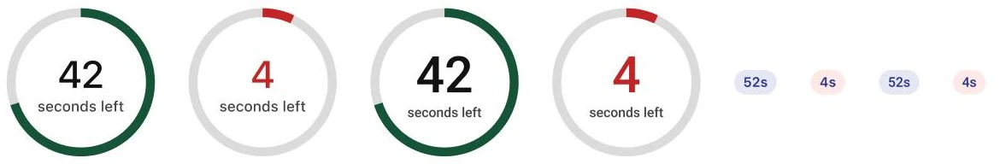
| Pair | Contrast | Needs |
|---|---|---|
White label on brand/, Bow Bank | 7.7:1 | 4.5:1 |
White label on brand/, Elbow Trust | 6.87:1 | 4.5:1 |
text/ on white | 8.45:1 | 4.5:1 |
text/ on white | 4.61:1 | 4.5:1 |
feedback/ on white | 5.62:1 | 4.5:1 |
border/ on white, input edge | 4.61:1 | 3:1 |
text/ is only allowed on white. On the light gray surface it drops to 4.12:1, so text/ is used there.
One place for colors, not one per screen. When a color changed, it changed everywhere.
Same names, same components, same flows. Only the values changed per bank.
Later, another designer used the system to make a new purple theme for a redesign. Same names, same components, a new look. That was the real test.
Every screen I handed off pointed to tokens. The whole team spoke one language.
I didn’t ask for a design system. I asked for one week, and I built only the color system. A small thing that works is easier to say yes to than a big plan.
Never write “nothing” in an audit until you’ve checked every layer. Look at the middle of the screen, not only the frame around it.
Components only use semantic tokens, with no exceptions. A rule with no exceptions is one engineers can check on their own, without asking me.
The first timer showed the last 5 seconds in red only. The pulse came later, for people who can’t tell red apart. Today I’d look for color-only states and small tap areas during the audit, not after.
feedback/error exists as a token, but no component uses it. A wrong activation code has a color and nowhere to show it, and a system should not carry a token with no home.Want to talk about design systems? I’m happy to walk through the tokens, the theming or the handoff. Email me.